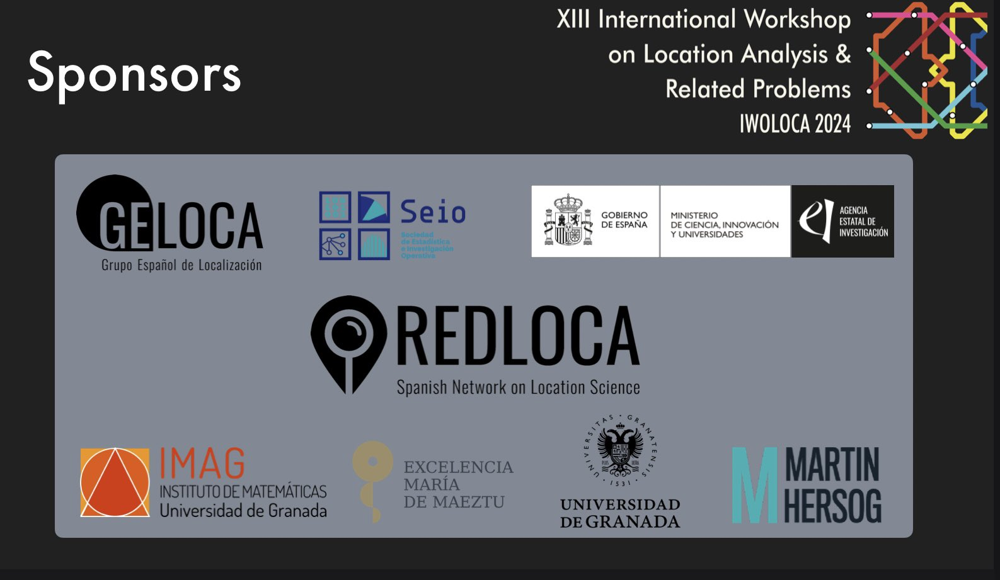

IWOLOCA XIII

Proceedings
The book of abstracts can be visited in here.
Submission Guidelines
The extended abstract – in IWOLOCA format– should not exceed 2 pages length (references included). The first page should contain the title, the authors’ names with their affiliations, and a short abstract. The introduction should be a broadly accessible exposition of the main ideas and techniques used to achieve the results, including motivation and a clear comparison with related work.
The submission server can be accessed here: easychair
Abstract submission deadline: (EXTENDED) May 15th, 2024 June 1st, 2024
Notification of acceptance: June 15, 2024.
Template (tex) for submission: IWOLOCA24 Template
(You can submit the .tex file in the submission process or a zip file with the .tex and the rest of the required files to compile your abstract).
Registration
The registration fee for the conference (including conferences materials, admissions to all sessions, lunches, dinners, and social activities) is 150€. A Limited number of rooms are reserved for the participants (included in the resgistration fee) at Carmen de la Victoria and Corrala de Santiago. The rooms will be assigned in order of registration and notified to the attendand.
The registration will be made by bank transfer to the Universidad de Granada account: ES58 2100 4224 3913 0072 0546 (Caixabank), indicating in the concept: IWOLOCA2024 FirstName LastNames
To complete the registration, the transfer receipt must be sent to iwoloca@gmail.com
Registration deadline: June 30th, 2024.
Confirmed Speakers
Jim Luedtke (University of Wisconsin - Madison)
Alfredo Marín (Universidad de Murcia)
Sibel Salman (Koç University)
Schedule
The definitive program for the conference is available here: Schedule
The proceedings for the Workshop can be downloaded here: Proceedings IWOLOCA24
Venue
The workshop will be held at the Institute of Mathematics (IMAG) - Universidad de Granada and Carmen de la Victoria (Salón de Actos)
List of Topics
- Facility and Hub Location
- Network Design
- Applications to Machine Learning
- Transportation
- Humanitarian Logistics
Committees
Program Committee
- Mari Albareda, (Universidad Politécnica de Cataluña).
- Víctor Blanco (Universidad de Granada).
- David Canca (Universidad de Sevilla).
- Elena Fernández (Universidad de Cádiz)
- Sergio García Quiles (University of Edinburgh).
- Jörg Kalcsics (University of Edinburgh).
- Mercedes Landete (Universidad Miguel Hernández Elche).
- Teresa Ortuño (Universidad Complutense de Madrid).
- Blas Pelegrín (Universidad de Murcia).
- Justo Puerto (Universidad de Seville).
- Juan José Salazar (Universidad de La Laguna).
Local Organizing Committee
- Marta Baldomero (Universidad de Cádiz)
- Víctor Blanco (Universidad de Granada) - Chair
- Ricardo Gázquez (Universidad Carlos III Madrid)
- Gabriel González (Universidad de Granada)
- Miguel Martínez-Antón (Universidad de Granada)
- Luisa Martínez-Merino (Universidad de Cádiz)
- Román Salmerón (Universidad de Granada)
- Francisco Temprano (Universidad de Sevilla)
- Alberto Torrejón (Universidad de Sevilla)
Contact
All questions about submissions should be emailed to iwoloca@gmail.com
Sponsors

Social Activities
As part of the social side of the conference, we will have during the conference: a wellcome cocktail, a guided visit, a tapas tour, and a gala dinner.